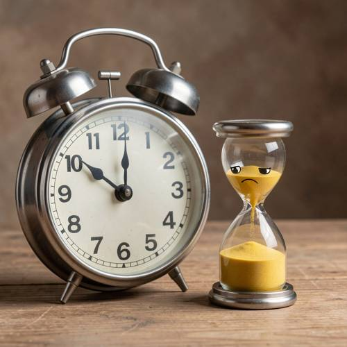
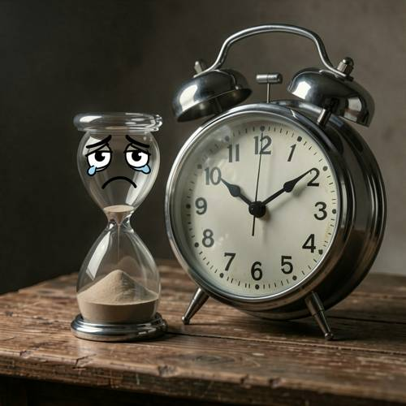
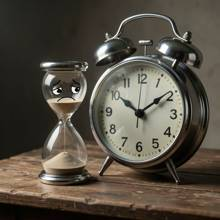
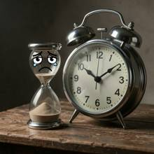
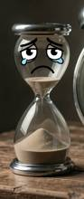
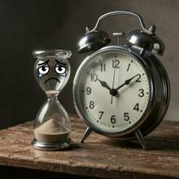

Logical Reasoning — Next to a huge metal alarm clock, a small glass hourglass looked sad b
Next to a huge metal alarm clock, a small glass hourglass looked sad because its sand had run out and seemed to lament the passage of time.

Direct — one call, no iteration

Continuum — Kimi K3 + FLUX.2-klein-9B
Judge — Direct
FAILLogical Reasoning — The image shows an hourglass with a sad expression, but the sand has not run out. Sand is still actively flowing from the top bulb to the bottom bulb, so the condition "because its sand had run out" is not met.
PASSAttribute - Expression — The hourglass has a cartoonish face drawn on its upper bulb, with downturned eyebrows and a frown, which clearly conveys a sad expression.
PASSAttribute - Material — The alarm clock has a silver-colored, reflective surface consistent with being made of metal. The hourglass is transparent and clear, consistent with being made of glass.
PASSAttribute - Size — The alarm clock is significantly larger than the hourglass standing next to it on a wooden surface. The hourglass is comparatively small in both height and width.
Judge — Continuum
PASSLogical Reasoning — The image shows an hourglass with a sad, crying cartoon face drawn on its upper bulb. All the sand is in the bottom bulb, indicating it has run out. The co-occurrence of these two visual facts supports the reasoning that the hourglass is sad because its sand has run out.
PASSAttribute - Expression — A cartoon face is drawn on the glass hourglass. The face has downturned eyebrows, sad-looking eyes with teardrops, and a frowning mouth, clearly depicting a sad expression.
PASSAttribute - Material — The alarm clock has a shiny, silver-toned casing with reflections, consistent with the appearance of metal. The hourglass is transparent, showing the sand inside, which is characteristic of glass.
PASSAttribute - Size — The alarm clock is positioned next to the hourglass and is visibly much larger in both height and width, making it appear huge in comparison to the small hourglass.
What the agent did
Thinking
We need answer to user likely wants image? They provided descriptive prompt. According to benchmark policy must generate image. Need always flux2-klein. Need perhaps first generate. Need understand scene: huge metal alarm clock next to small glass hourglass, hourglass looks sad because sand run out and laments passage of time. Need perhaps anthropomorphic sad hourglass? "looked sad" could visually show downturned eyes/mouth on glass hourglass. Need generate image matching. Use flux2-klein fixed. Maybe 1024 default, no seed. Need generate detailed visual. Let's call.
Step 1 — `generate_image`
{
"model": "flux2-klein",
"prompt": "A whimsical still-life illustration of a tiny glass hourglass with a sad cartoon face, its upper chamber completely empty and only a small mound of sand below, standing beside a huge polished metal alarm clock with two bells and visible ticking hands. The hourglass droops slightly as if mourning the passage of time, while the giant alarm clock towers over it. Dramatic soft lighting, melancholic mood, detailed glass reflections, aged wooden tabletop, cinematic composition."
}
Result img_0

Thinking
Need inspect. Image visible in tool output? Need reason. Hourglass actually has sand top partly and falling, not run out. Prompt says sand had run out, perhaps upper empty and all sand below. Face looks sad. Clock huge metal. Need edit targeted. Need use edit_image with flux2-klein. Mark best first? As soon as willing submit? Current mostly works except sand not out. Need maybe edit then inspect. We can mark current? It may be acceptable but mismatch key detail. Could mark now to ensure if interrupted; but "best result so far" and later better. Let's mark img0 perhaps.
Step 2 — `mark_best`
{
"image": "img_0",
"reason": "Strong composition with a huge metal alarm clock and a small sad hourglass, though the hourglass sand still needs to appear fully run out."
}
Thinking
Now edit: remove sand from top? Concrete visual language: "Make the hourglass's upper chamber completely empty; all the sand rests in lower chamber..." Since target region. Use flux2-klein. Need maybe mention preserve face? Delta only. Prompt: "Make the small hourglass's upper chamber completely empty, with no falling stream, and place all its sand as a mound in lower chamber." This is change.
Step 3 — `edit_image`
{
"image": "best",
"model": "flux2-klein",
"prompt": "Make the small hourglass's upper chamber completely empty with no falling sand stream, and place all the sand as a settled mound in its lower chamber."
}
Result img_1
Thinking
Oops face disappeared. Also upper chamber still has sand cone? It looks maybe small layer top. Lower large mound. Need restore sad face and complete empty upper. Current less matching than prior because sad key gone. Need edit from img1 or img0? Better perhaps from img0, add sand out without losing face. But edit leaked. Could use inpaint targeted region of hourglass? But default edit. Need perhaps use current and add face + ensure top empty. Prompt: "Restore the sad cartoon face on the small hourglass's upper glass..." But current top still sand. Could combine? Multi-step says split ordered single-entity edits; same entity two changes maybe okay? Could do one? Better from img0 with targeted inpaint? Use segment hourglass, inpaint prompt "a small glass hourglass with sad cartoon face, upper chamber completely empty..." But inpaint may preserve. Yet segment and inpaint text only, but object target. Could get good. However edit_image targeted is default. We can edit current with two changes? The multi-step says distinct changes; here perhaps one region but two attributes. Need maybe add sad face first, then empty. But adding face perhaps enough. User didn't literally require anthropomorphic face? "looked sad" implies. First generation did it. Current lacks sadness. Need fix. Could edit current "Add a sad cartoon face..." then perhaps another sand edit. Let's do current to restore face.
Step 4 — `edit_image`
{
"image": "img_1",
"model": "flux2-klein",
"prompt": "Add a sad cartoon face with drooping worried eyes and a small downturned mouth to the small hourglass's upper glass chamber."
}
Result img_2

Thinking
Now face exaggerated but okay. Upper chamber has a thin layer sand at neck, not completely empty. Need maybe edit specifically "empty the upper chamber..." risk face disappears. Could use inpaint only top sand? Maybe segment text "sand in upper chamber" and inpaint with clear glass preserving outside? Pixel exact outside and face likely maybe sand region separate. Could use inpaint on current. Segment description "the sand in the upper chamber of the hourglass" maybe mask, then prompt "clear empty glass with no sand". But inpaint fill likely regenerates. Need maybe no face overlap. Let's inspect crop of hourglass perhaps use inspect_region.
Step 5 — `inspect_region`
{
"image": "img_2",
"roi": "the small hourglass",
"padding": 0.15
}
Result img_3

Thinking
The upper chamber has a shallow sand layer, could be interpreted nearly run out but prompt says run out. Need fix perhaps segment. Use segment text on img2 "the thin layer of sand in the upper chamber of the hourglass" with negative "the sand in the lower chamber" maybe.
Step 6 — `segment`
{
"description": "the remaining sand in the upper chamber of the hourglass",
"image": "img_2",
"negative_descriptions": [
"the mound of sand in the lower chamber of the hourglass",
"the alarm clock"
],
"threshold": 0.3
}
Result img_4
Thinking
Mask poor. Maybe point segmentation? On image img2 resolution 768? Need coordinates. Upper sand region around x ~235, y 365? Use points positive on upper sand maybe [235,366], [200,371], [270,371]? Negative face? No. Segment_points maybe.
Mask entire hourglass excluding sand. Not good. Could use inpaint with mask of upper chamber? We can create mask via segment boxes? Need mask only top sand maybe small box. segment_boxes with box around upper sand. It might detect hourglass. Not likely. Could inpaint using mask from segment of upper chamber maybe prompt includes clear glass and face, but then mask might regenerate entire hourglass, maybe okay. However inpaint text cannot preserve face if masked; we'd need describe face. Mask img5 includes hourglass except lower sand. If inpaint whole hourglass with prompt "small glass hourglass, sad cartoon face... upper chamber completely empty, all sand lower chamber" could generate good, but maybe mask leaves lower sand unmasked weirdly? White region includes entire hourglass, black hole at sand lower, meaning sand preserved pixel-exact. Prompt for masked region: "clear empty glass upper chamber with sad cartoon face, narrow waist, transparent lower glass surrounding the existing mound" It may work. But fill is FLUX.1, style maybe differs. Better edit_image current with prompt "Empty the upper chamber... keep sad face unchanged" maybe could preserve? Yet prior edit removed face. Could use references current and mention preserve the face. Per rules use references to lock aspects. edit_image img2 references [img2]? Maybe pass current as both image and reference? Could be weird. Better maybe reference img2 and prompt "Make the upper chamber completely empty... preserve the sad cartoon face exactly as in reference." It may maintain. Let's try from img2 with reference img2. Since current is best candidate though not marked. Mark? Current img2 has face, more sad. Although upper not empty, probably better than img0? img0 also face and some sand in upper. img2's sand mostly lower and clear face, better. Mark img2 as best before further.
Step 8 — `mark_best`
{
"image": "img_2",
"reason": "The hourglass now clearly looks sad and most of the sand has settled below, while the giant metal alarm clock remains prominent."
}
Thinking
Now edit best with references.
Step 9 — `edit_image`
{
"image": "best",
"model": "flux2-klein",
"prompt": "Empty the hourglass's upper chamber completely, leaving clear glass above the narrow neck and all the sand settled in the lower chamber. Preserve the sad cartoon face exactly.",
"references": [
"img_2"
]
}
Result img_6

Thinking
Now upper empty except tiny sand at neck? Looks nearly. Face preserved. Composition good. The hourglass maybe same size? small relative huge clock. Good. Need mark img6 better. Could stop. Need inspect details perhaps upper chamber clear. The bottom has mound. No falling sand stream? Tiny at neck maybe okay. The scene matches. Need mark best last.
Step 10 — `mark_best`
{
"image": "img_6",
"reason": "Best match: the huge metal alarm clock towers beside a small sad hourglass with a clear, empty upper chamber and its sand settled below."
}
Thinking
Need final concise, likely just say done. Maybe image already output; final can mention. No more tool.
Model
Done — the final image shows a small, sad glass hourglass with its sand run out beside a huge metal alarm clock.